tkScenarist
Screen writing made simpler – Simplifiez-vous la vie !
Présentation
tkScenarist est une petite application écrite en Python3/Tkinter qui
vise à faciliter la rédaction de scénarios de films pour tous les
scénaristes en herbe, futurs et à venir.
Ce logiciel est un freefullware (voir ci-dessous).
Copyright
tkScenarist - screen writing made simpler.
Copyright (c) 2014+ Raphaël Seban motus@laposte.net
Licence
Ce logiciel est publié sous licence GNU GPL General Public License v3.
Les termes de cette licence doivent rester intacts, c'est-à-dire - entre autres - qu'ils ne doivent pas être traduits.
Termes de la licence (en anglais) :
This program is free software: you can redistribute it and/or modify it under the terms of the GNU General Public License as published by the Free Software Foundation, either version 3 of the License, or (at your option) any later version.
This program is distributed in the hope that it will be useful, but WITHOUT ANY WARRANTY; without even the implied warranty of MERCHANTABILITY or FITNESS FOR A PARTICULAR PURPOSE. See the GNU General Public License for more details.
You should have received a copy of the GNU General Public License along with this program.
If not, see http://www.gnu.org/licenses/
Freefullware
Qu'est-ce qu'un freefullware?
Un logiciel est dit freefullware lorsque :
- il est libre d'utilisation, de modification et de partage ;
- il est totalement gratuit ;
- il ne contient absolument aucune publicité ;
- il n'a pas de bouton 'Donate' (donner pour aider) ;
- il est garanti 100% virus-free (sans virus connu) ;
- il n'attend aucune contrepartie de votre part ;
- il est vraiment absolument libre, dans tous les sens du terme ;
Téléchargez-le, utilisez-le et amusez-vous bien.
That's all, folks!
Fonctionnalités
À cette heure :
-
toute la gestion du projet a été concentrée en un seul fichier projet unique, qui porte l'extension de fichier
.scnou.zip(au choix, c'est comme vous voulez) ; -
en cas d'urgence, il vous est toujours possible de dézipper ce fichier projet unique pour récupérer les différents éléments du projet, tous stockés sous la forme de fichiers texte brut encodés UTF-8. Cette procédure a été voulue ainsi afin que vous puissiez toujours rester maître de vos données ;
-
le premier onglet de l'application représente le
titrede votre projet, ainsi que diverses informations telles que : titre, sous-titre, épisode, auteur, e-mail auteur, tél. auteur et quelques stats sur le projet lui-même ; -
le second onglet permet de gérer des
notes personnellesconcernant votre projet de film ; -
le troisième onglet permet d'écrire le
pitchou le concept de l'histoire (rappelons ici vite fait que le pitch est un résumé très succinct de l'histoire), bref, d'y recenser tous les moments forts du film à venir ; -
au cas où vous auriez besoin d'un petit coup de pouce pour votre inspiration, un outil est disponible dans le menu
Outils > Modèles d'histoires/pitchs: il vous offre une série extensible de modèles d'histoire à prendre comme point de départ pour vos propres idées ; -
le quatrième onglet de l'application,
Personnages, est un outil fort pratique : vous pouvez y déclarer tous les protagonistes de votre histoire, renseigner leur histoire personnelle et même gérer visuellement les relations qui les lient entre eux ; -
au cas où vous auriez besoin d'un petit coup de pouce pour votre inspiration, un outil est disponible dans le menu
Outils > BDD noms de personnages: une base de données (BDD) de centaines de noms de personnages provenant de toute la planète est à votre disposition pour apporter un plus à votre projet ; -
le cinquième onglet
Scénarioest sans doute le plus important pour un(e) scénariste : c'est ici que s'écrit l'histoire, le scénario, conformément aux règles du métier. Merci de consulter la doc wiki pour plus d'information sur son utilisation détaillée ; -
un petit outil supplémentaire est désormais disponible dans le menu
Outils > Éléments de scénarioqui vous permet de régler plus finement l'utilisation de l'éditeur de scénario qui se trouve dans le cinquième onglet de l'application ; -
le sixième onglet,
Storyboard, permet de gérer le découpage technique du scénario. Cet outil vous est offert en extra. Normalement, le logicieltkScenaristaurait dû s'arrêter à la rédaction du scénario, mais pour les petits projets de film, je me suis dit que ce serait bien pratique d'avoir aussi le storyboard à portée de main ; -
idem pour le septième onglet,
Ressources, qui n'est là que pour faciliter l'organisation des petits projets de film. Il va sans dire qu'un projet de film plus ambitieux nécessitera sans aucun doute des logiciels plus puissants (et moins gratuits, au passage) ; -
l'outil d'exportation des données du projet vers le format PDF imprimable autorise à présent la gestion de documents multiples, séparés les uns des autres, avec des options à régler juste avant le lancement de la procédure d'exportation ;
-
le logiciel
tkScenaristest à présent entièrement traduit en français de France métropolitaine (fr_FR).
Captures d'écran
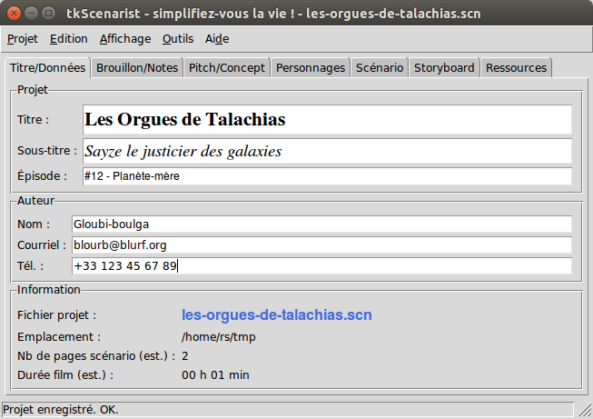
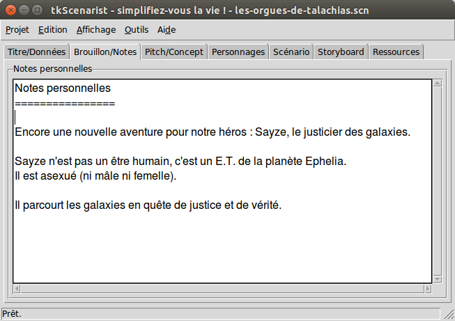
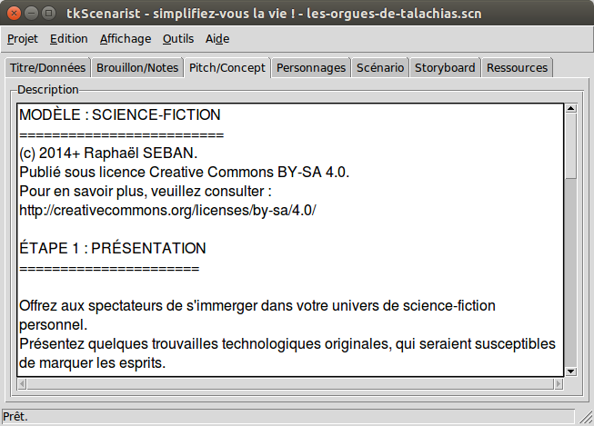
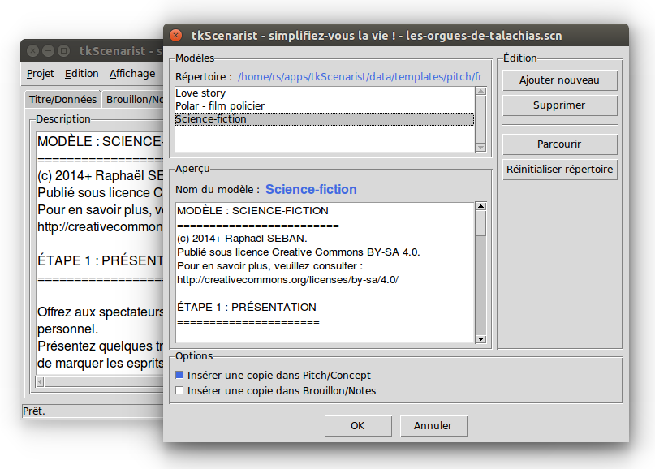
 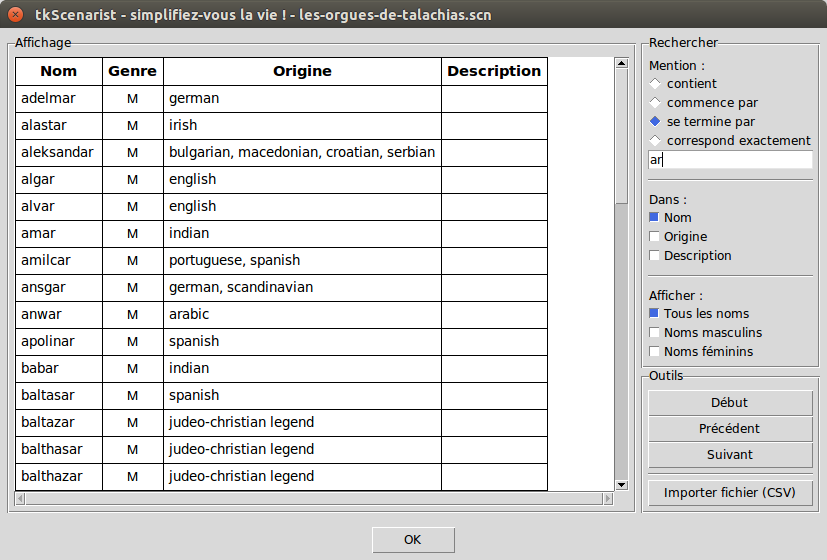
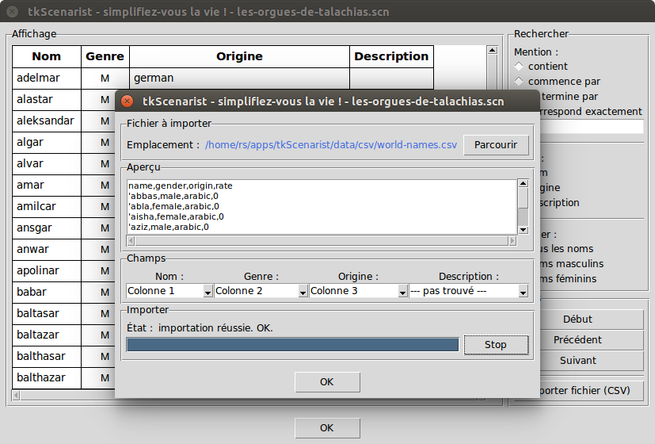
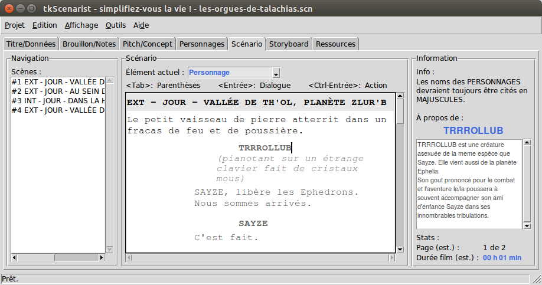
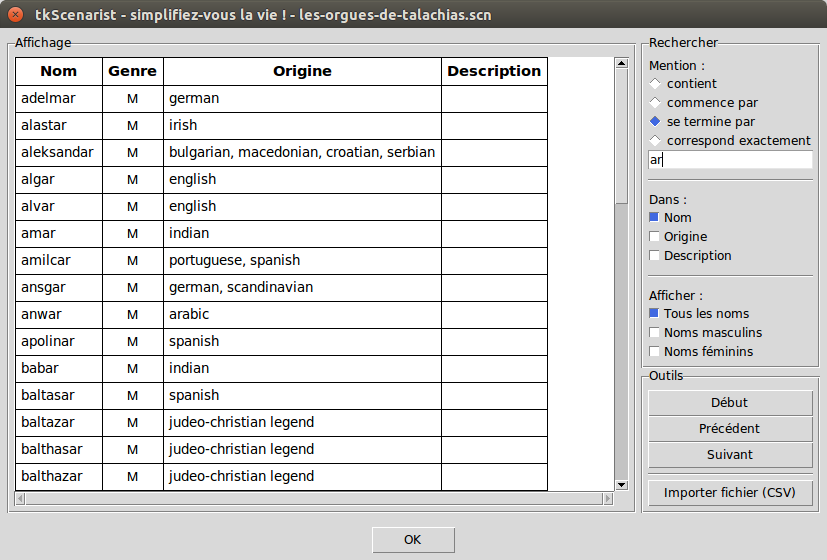
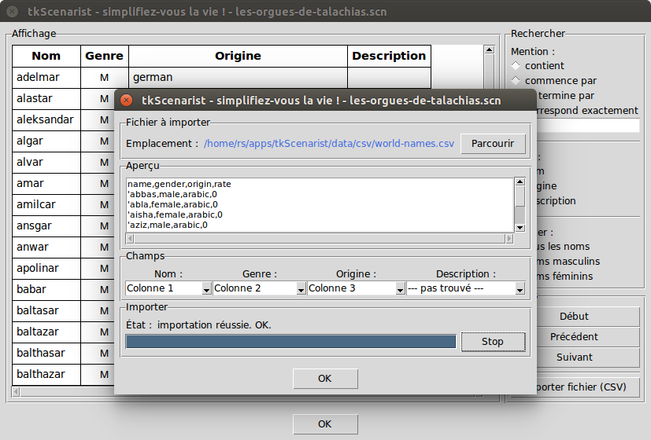
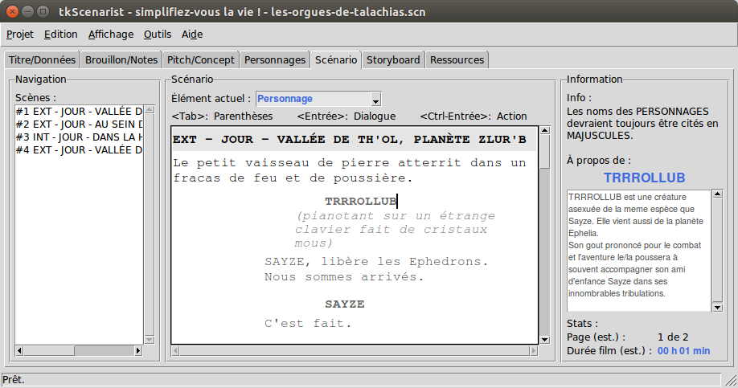

 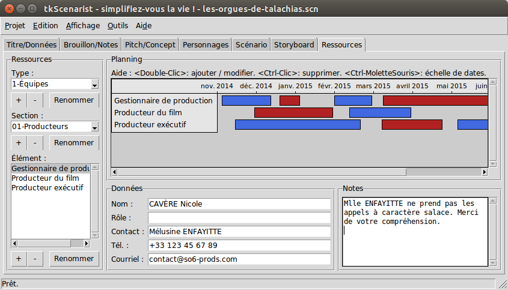
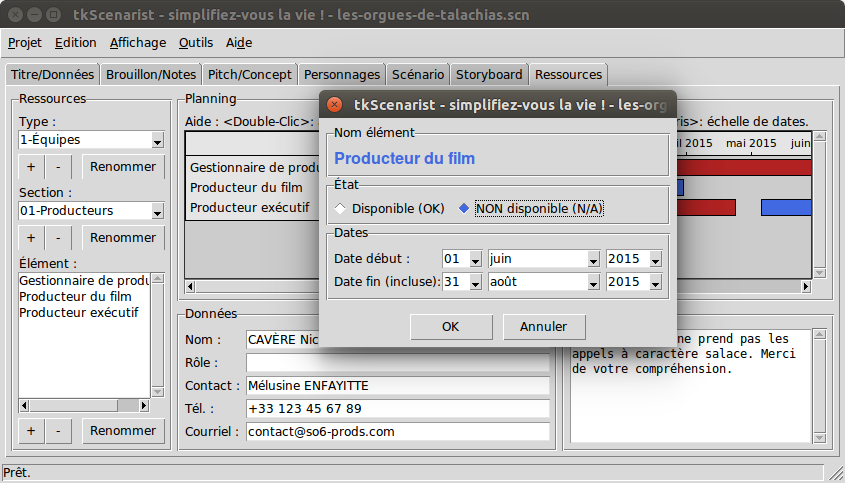
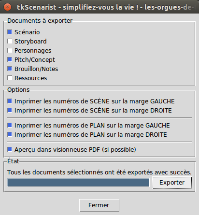
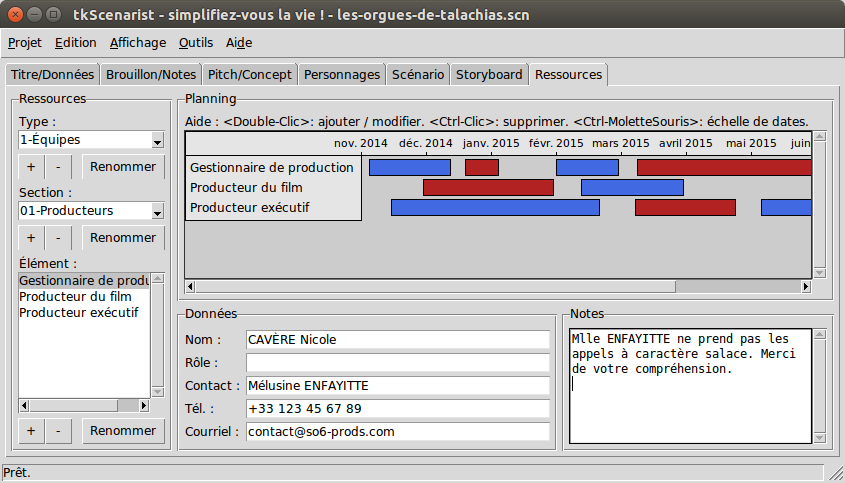
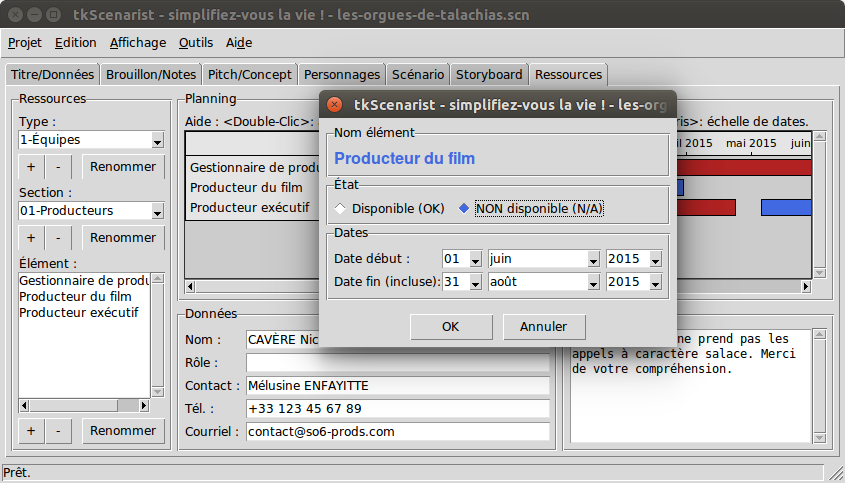
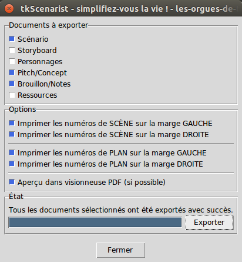
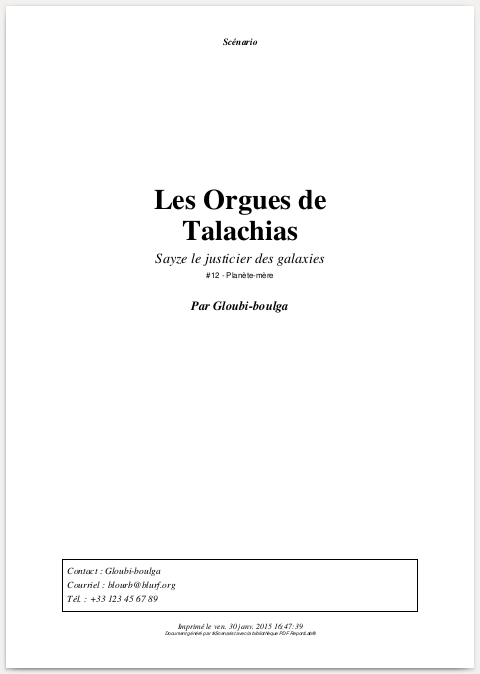 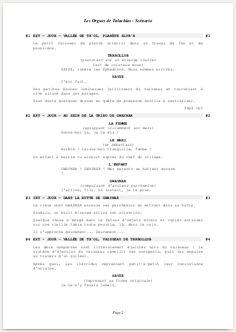 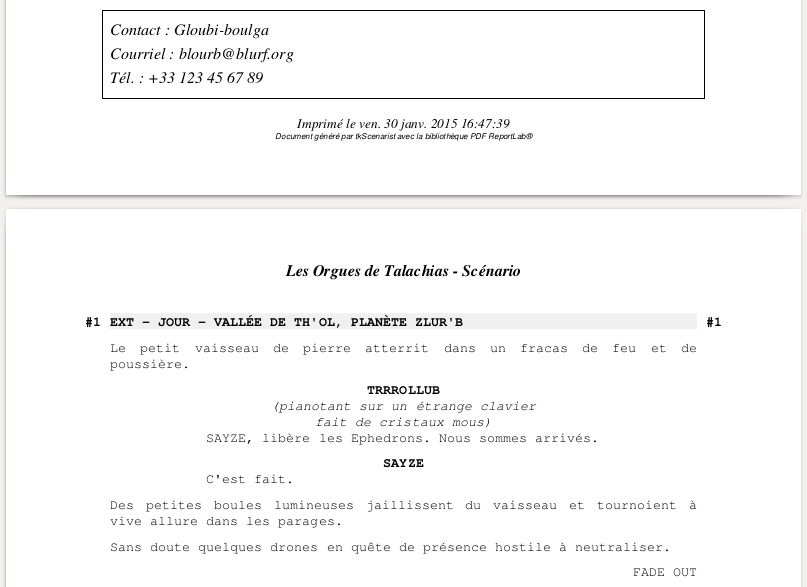
Avancement du projet
Development Status :: 5 - Production/Stable
Ce logiciel a été :
- Linux:
- TESTÉ OK pour toutes les distributions standards ;
- MacOS:
- PAS ENCORE TESTÉ ;
- MS-Windows:
- TESTÉ seulement avec MS-Windows(tm) 8, mais semble fonctionner plutôt bien, pour le moment ;
Tout retour d'expérience dans le bugtracker du projet est toujours le bienvenu.
Installation
Ce logiciel n'a PAS besoin d'être installé, de quelque manière que ce soit.
Il vous suffit de le télécharger à la page Releases du projet GitHub, de dézipper l'archive téléchargée et de l'utiliser immédiatement.
Bien sûr, dans l'idéal, vous prendrez la précaution de copier le
dossier obtenu dans l'un de vos dossiers préférés – exemple
apps – sachant qu'un logiciel qui traîne dans le dossier des
téléchargements a toutes les chances de se faire supprimer
accidentellement.
Démarrage rapide
Important
Ce logiciel ne peut fonctionner que si Python3 et Tkinter sont correctement installés sur votre machine.
En revanche, il n'y a pas d'autres dépendances que ces deux pré-requis.
Python3 est le langage de programmation utilisé par le logiciel
tkScenarist et Tkinter sa bibliothèque graphique, généralement
installée par défaut avec le langage Python3.
Si jamais vous obtenez un message d'erreur du type ImportError dans la fenêtre noire (console) qui apparaît lors du lancement du logiciel, c'est qu'il y a de fortes chances pour que vous essayiez de lancer le programme avec Python2 et non pas son grand frère Python3. Il peut arriver parfois aussi que la bibliothèque Tkinter soit mal installée, bien que ce soit rare.
Quoi qu'il en soit, n'hésitez pas à vous faire aider sur les forums d'entraide appropriés (par exemple : developpez.com).
Notez que l'installation de Python3 à côté de Python2 ne pose généralement aucun problème particulier.
Vous pouvez télécharger et installer Python3 à partir de cette adresse :
https://www.python.org/downloads/ (Ctrl+clic: nouvel onglet)
Note
La plupart des distributions Linux populaires e.g. Ubuntu, Debian, SuSE, etc. ont déjà une pré-installation de Python3/Tkinter.
Si vous êtes dans ce cas, n'essayez pas d'installer Python3/Tkinter manuellement, non seulement c'est totalement inutile, mais de plus, cela pourrait mettre une sacrée grouille dans votre système.
Dans un tel cas, il vous suffit de télécharger une release de tkScenarist,
de la dézipper et de l'utiliser immédiatement.
Usagers de MS-Windows™
Une fois le dossier tkScenarist-... dézippé et copié en lieu sûr,
double-cliquez simplement sur le fichier tkscenarist.py qui se trouve
dedans pour lancer l'application.
Vous ne voulez pas la console noire
Plusieurs usagers de MS-Windows™ ont fait remarquer qu'ils ont une console MS-DOS noire qui apparaît au lancement du logiciel.
Cette fenêtre particulièrement disgracieuse peut même parfois être carrément gênante.
Il s'agit cependant d'un comportement propre au langage Python sous MS-Windows™ et cela n'a rien d'anormal.
Toutefois, si vous souhaitez vous débarrasser de cette console noire,
il vous suffit de changer l'extension du fichier .py en .pyw puis
de lancer à nouveau votre logiciel favori pour ne plus être embêté(e).
Dans le cas ici présent, cela revient à renommer le fichier
tkscenarist.py en tkscenarist.pyw, puis de relancer le programme
pour que cela fonctionne sans console.
UNIX/Linux
Une fois le dossier tkScenarist-... dézippé et copié en lieu sûr,
cliquez simplement sur le fichier tkscenarist.py qui se trouve dedans
(si le sticky bit 'executable' autorise l'exécution du fichier tel
quel) pour lancer l'application.
Si cela ne donne rien, ouvrez une console shell et tapez :
$ cd /emplacement/du/fichier # à remplacer, évidemment.
$ python3 tkscenarist.py
Exemple concret : en supposant que vous avez copié le dossier
tkScenarist/ dans votre répertoire favori ~/apps/, cela
donne :
$ cd ~/apps/tkScenarist
$ python3 tkscenarist.py
That's all, folks!
Amusez-vous bien !